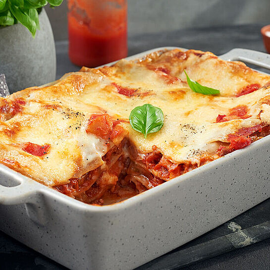

lasangna
Homepage

Beschreibung Lasagne
Lasagne für 4 Personen
Zutaten
- Lasagne 500g
- Hackfleisch 400 g
- Berchamelsauce 200 ml
- Zwiebeln
- Gouda gerieben 250g
- Tomatensauce 200ml
- Knoblauch - 3 zehen
Zubereitung
- Zwiebeln und Knoblauch klein hacken
- Sauce mischen
- Auflauffrom einfetten und schichtenweise befüllen
- 20 Min 170 Grad Ober-Unterhitze
- Fertig